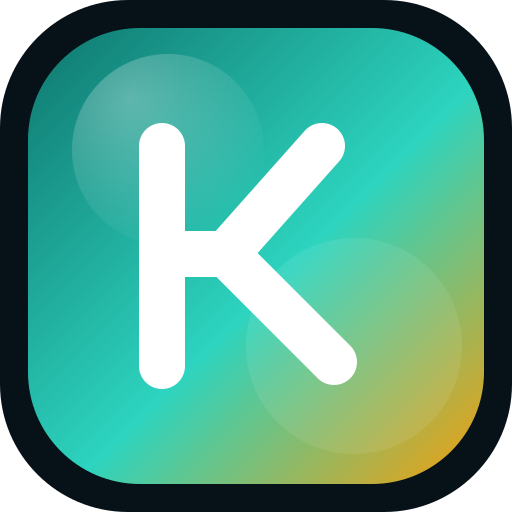

Background
25+ years across software and IT
Kyle's career spans enterprise software, testing, systems administration, and consulting long enough to know what actually holds up in production.

AI Coding Coach / Programming Mentor
About Kyle
Kyle Rode owns myTech.Today, has been doing IT consulting since 2016, and brings 25+ years across enterprise software, testing, systems administration, and creative production. Since around 2022 he has focused on AI/ML workflows and agentic tooling. The coaching model is built from that trail: public code, practical writing, hands-on projects, and a delivery rhythm that makes the offer concrete.
Resume snapshot
These are the parts of the resume that matter most for mentorship: enterprise systems, client delivery, public tools, and the ability to translate technical work into something practical for real builders.
Background
Kyle's career spans enterprise software, testing, systems administration, and consulting long enough to know what actually holds up in production.
Consulting
He has run myTech.Today as an MSP and consulting practice in Chicagoland, delivering AI apps, automation, security, and custom development for real clients.
Enterprise
Earlier work touched ERP, EDI, SQL Server, C#, Active Directory, backup and recovery, and acquisition data migrations.
Creative
Sony Computer Entertainment, Three Space Imagery, and game production work shaped the product judgment and communication side of the coaching.
Public trail
The resume links point to a public footprint that includes senior IT history, open-source tools, and reusable packages for AI workflows.
AI focus
Recent work focuses on Claude, MCP servers, agentic frameworks, local workflows, and tooling that makes AI useful instead of theatrical.
Credibility
The point is not to impress with jargon. It is to show the trail of work that makes the coaching useful in the real world.
Public trail
Tools and focus